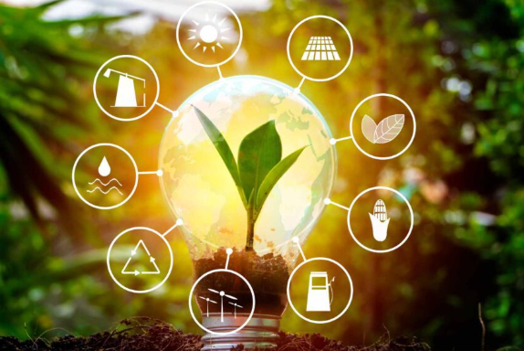
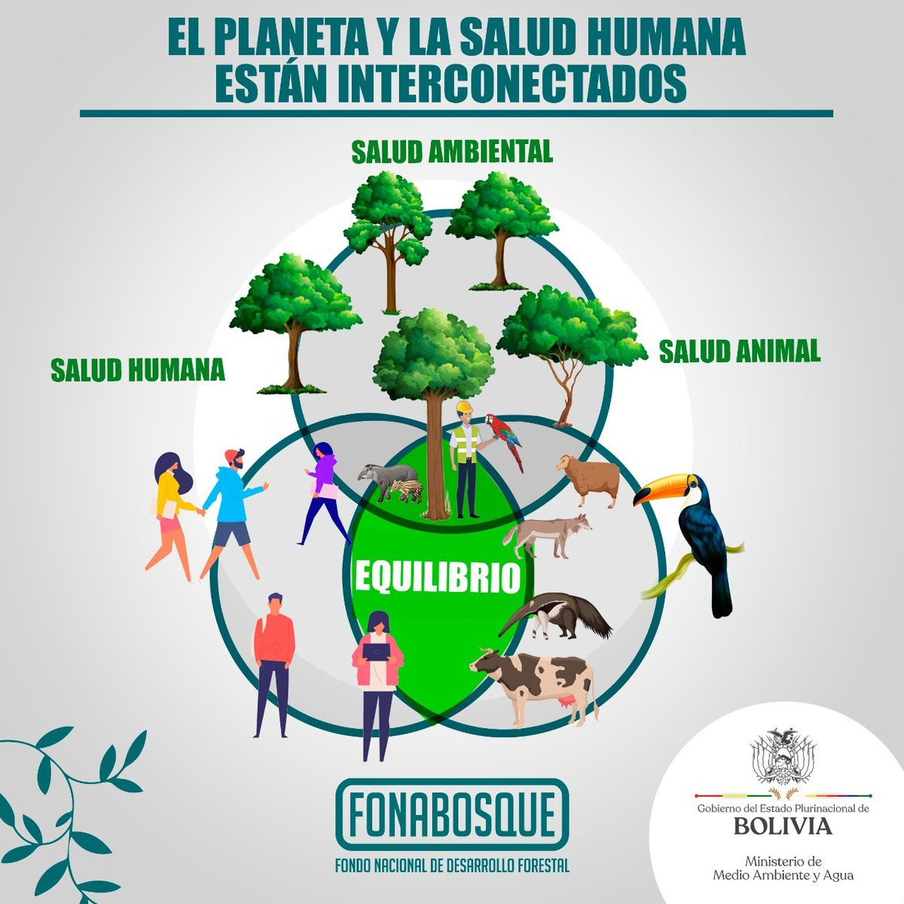
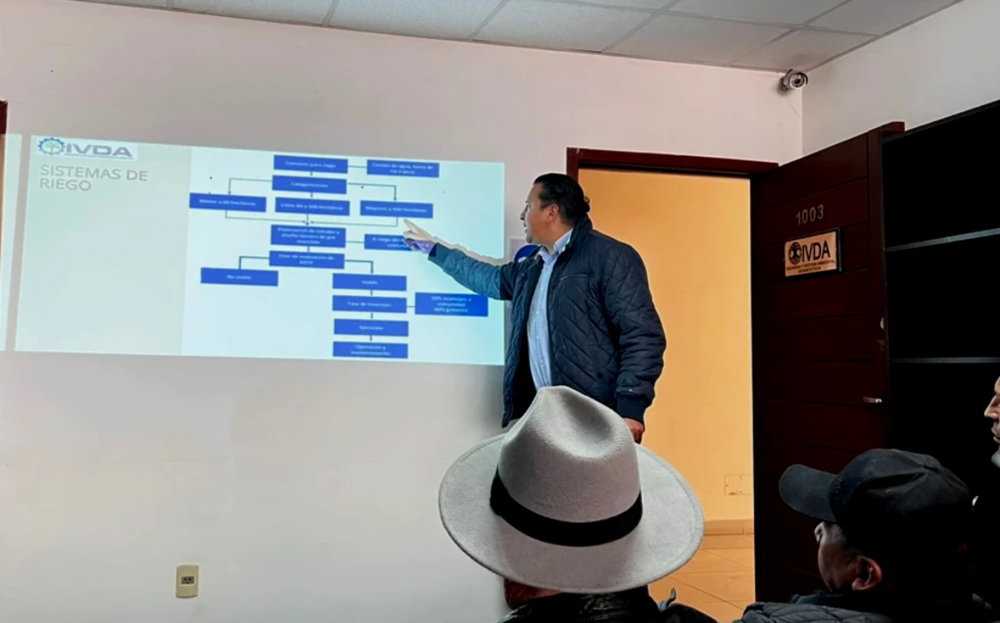
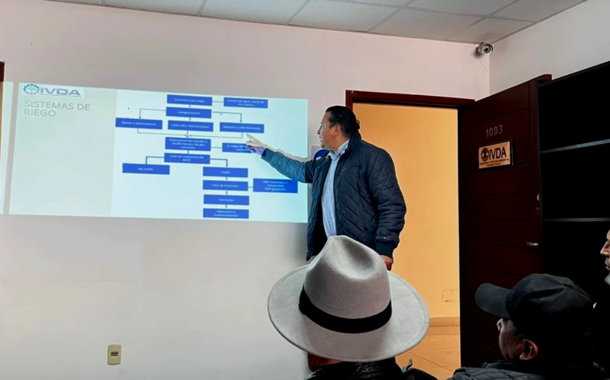

La fundación
Los objetivos específicos de la Fundación se relacionan a las siguientes áreas:

Investigación y tecnología

La Fundación, en línea con el compromiso de responsabilidad social y ambiental, y sus propios Estatutos tiene como finalidad el fomento de actividades de interés general en aquellas áreas donde desarrolla sus actividades, y en concreto en los siguientes ámbitos o líneas de actuación:
Con el objetivo de contribuir con iniciativas que promuevan el desarrollo sostenible del sector productivo, a través de la conservación y preservación de los recursos naturales y el medio ambiente; impulsando acciones o estrategias a través de programas enfocados a la calidad del aire, cambio climático, contaminación acústica, sostenibilidad de las aguas, gestión de residuos y otros con la finalidad de mejorar la calidad de vida de la población.
Ayudar a mejorar la asistencia sanitaria, el acceso a las medicinas y el cuidado de la salud de los ciudadanos, a través de proyectos que impulsen la capacitación, asesoramiento, convenios de colaboración, canalización de recursos y otros, en servicios médicos; y, desarrollo y familia.
Contribuir a mejorar la salud promoviendo programas que contribuyan a alcanzar estilos de vida más saludables contribuyendo al bienestar integral promoviendo iniciativas orientadas a marcar una diferencia positiva en la calidad de vida en todas las edades de nuestra comunidad.
Reforzar conocimientos, prácticas y habilidades de las personas, familias y comunidades sobre la prevención de enfermedades; motivando acciones personales y colectivas saludables vinculadas a las condiciones sociales de la salud y la participación en la toma de decisiones colectivas utilizando capacitaciones que contribuyan a mejorar la calidad de vida.
Implementar proyectos orientados a la prevención de la degradación del medio ambiente que en forma directa o indirecta atenten contra la salud humana, vida animal y vegetal, restauración de las zonas afectadas y saneamiento ambiental.
Gestionar programas orientados a mejorar la calidad salud de la población que se ve afectada por la contaminación del aire, agua y suelos, el ruido, las emisiones químicas, la contaminación alimentaria y las consecuencias del cambio climático entre otros.
La entrevista tuvo lugar en el programa Entre Líneas del Canal Posdata TV, donde se trataron temas como el día Internacional para Prevenir la Explotación del Medio Ambiente en la Guerra y los Conflictos Armados; los Incendios forestales en nuestro país; la influencia del cambio climático en nuestro país y la Escases del Agua en nuestra cuidad.
Hoy, en el programa Dale Vuelta a la Moneda - DLVM; fue entrevistado nuestro fundador Ivan Daza, donde trataron temas del cambio climático, la sequía y medidas de prevención que debemos tener en cuanto al consumo de agua.
https://www.facebook.com/DaleLaVueltaALaMoneda/videos/3318836068331733
La participación de uno de nuestros fundadores en el programa DOSSIER de la cadena PAT, trataron temas de la contaminación del agua por la actividad minera, que se desarrollan cerca de las represas que abastecen de agua potable a la ciudad de La Paz y El Alto.
Se tuvo una reunión con municipios para exponer planes de acción inmediata para combatir la sequía; presentando los procedimientos de la elaboración de Estudio de Diseño Técnico de Preinversión para la perforación de pozos, sistemas de riego. Además, de presentar el proceso de armado de atajados.
La participación de uno de nuestros fundadores en el programa DOSSIER de la cadena PAT, trataron temas de la contaminación del agua por la actividad minera, que se desarrollan cerca de las represas que abastecen de agua potable a la ciudad de La Paz y El Alto.
https://www.facebook.com/dossier.pat/videos/1294090928137475/
 
